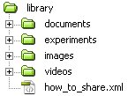

Video File
Video File HTML Page
HTML Page PDF Document
PDF DocumentIn this section you will learn more about Tracker resources, then identify and organize your own resources to prepare them for sharing.
You can include the following types of resource in your Collection. This Collection has examples of all types.
Video File HTML Page PDF DocumentA Tracker Project is a zip file that contains one or more Tracker tabs and other documents which together define a complete Tracker project. To build a Tracker project see Help: Tracker Projects. Projects should usually include support documents (HTML or PDF format) that describe the resources and explains how they can be used. The documentation may include student lab instructions and/or instructor notes.
When you double-click a Tracker project or Video node in the Library Browser, the file is first downloaded to the Open Source Physics cache directory on the local machine, then the cached file(s) are opened in Tracker. This results in more responsive videos. The path to the Open Source Physics cache can be found in the General tab of the Tracker Preferences dialog (Edit|Preferences... menu item).
Since you can define Resource and HTML File paths that are either absolute or relative to a base URL, it is a good idea to keep all of your Collection files in a single directory (with subdirectories) so a single base URL can be used for the entire Collection. For example, all files used for the Sharing Tracker Projects collection are stored in a "library" directory as shown below, so the base URL (defined in the root node) is the path to that directory on the server. The documents subdirectory holds the HTML files and the experiments subdirectory holds the TRZ files.

Note: files do not have to be on a web server when building a Collection. As long as the file structure on the local machine is the same as that on the server and the HTML File and Resource paths are relative, then moving the Collection requires only that you change the Base URL.